4. Funcționalitățile aplicației
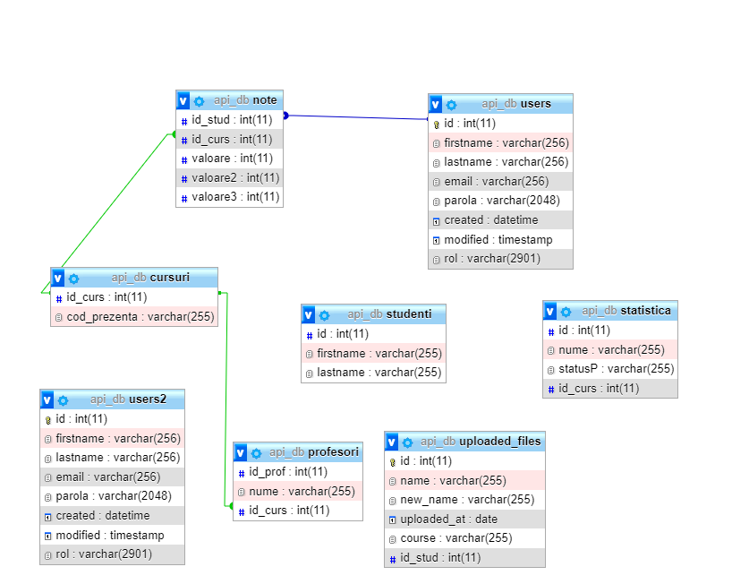În această parte a documentului HTML vom prezenta funcționalitățile actuale ale aplicației și vom explica rolul și metoda de implementare pentru fiecare element în parte. Însă, pentru început, demn de specificat este faptul că, pentru a păstra datele de autentificare ne folosim de facilitățile oferite de JWT, acest fapt ajutând mai ales la respectarea principiilor unui REST API.
În ceea ce privește diminuarea riscurilor de SQL Injection ne folosim de funcția prepare() pentru a pregăti/procesa datele primite de la utilizator, pe care le vom executa.
În cele din urmă, vorbind despre prevenirea atacurilor de tip XSS, avem funcția htmlspecialchar() prin care se dorim să îndepărtăm nefericitele situații de HTML Injection document-creation-time.
4.1 Loading screen
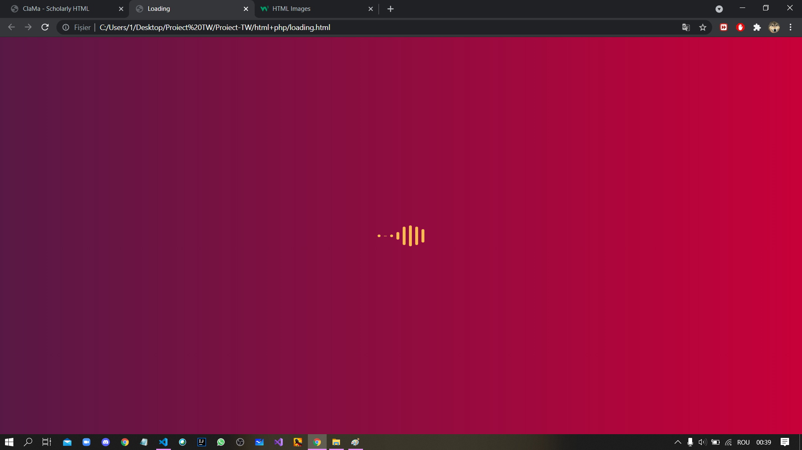În prima parte a aplicației, pentru estetica site-ului nostru, vom avea o animație de tip „loading”. Această aplicație a fost scrisă în HTML și CSS, iar, pentru a fi legată de partea de login, ne-am folosit de un javascript ce face tranziția dintre cele două pagini.
4.2 Login
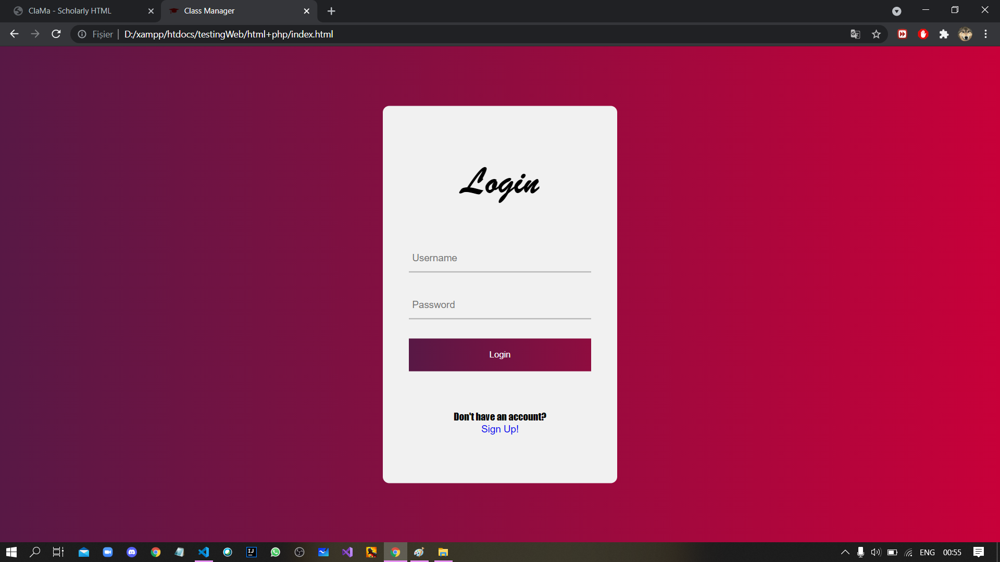Cea de-a doua componentă vizibilă utilizatorului va fi partea de login, implementatată, până acum printr-un HTML, un CSS, o parte de JS și o parte de PHP. Prin partea de login, cei ce se vor în registra în baza noastră de date își vor putea folosi contul pentru a utiliza aplicația noastră. Vom avea 2 tipuri de conturi: profesor și elev.
Din partea de PHP, vom avea pentru toate conturile un JWT generat pe care îl putem decodifica pentru avea datele utilizatorului. JWT-ul se va păstra pe tot parcursul timpului în care utilizatorul îl va petrece pe paginili noastre. Pentru verificarea acestei informații despre JWT, se poate utiliza site-ul: https://jwt.io/.
Tot aici este momentul în care decidem dacă este necesar un token. Astfel, dacă toate username-ul și parola sunt corecte, se va genera acest JWT. Pentru toate cazurile contrare, vom șterge JWT-ul generat și vom rămâne pe partea de login până când se vor introduce date valide.
4.3 Register
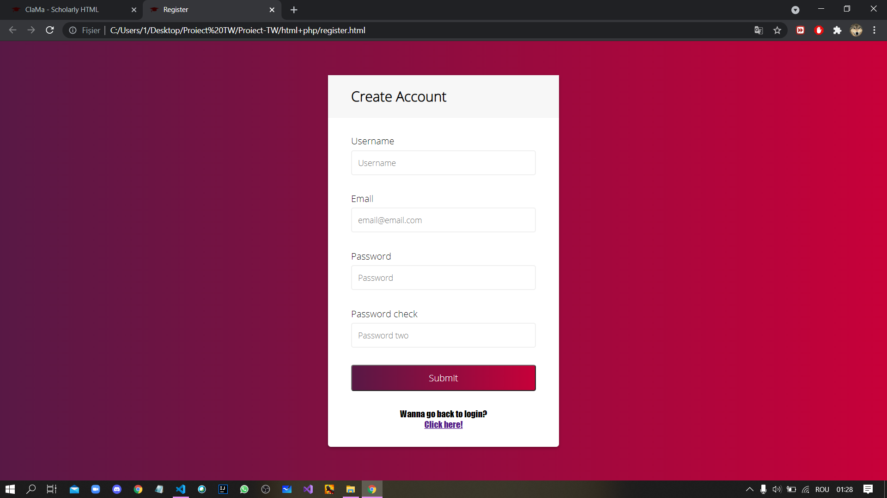În partea de register vom avea 4 câmpuri: username, email, parolă, confirmare parolă. Aceste date vor fi introduse în baza de date, dar nu înainte ca noi să realizăm o verificare dacă nu există deja un cont cu același username sau același email. La momentul actual, verificăm dacă aceste câmpuri sunt compeltate, dacă emailul are forma specifică ( @domainname) și dacă parola inițială se potrivește cu cea din câmpul de confirmare a parolei. În subsolul formularului, avem butonul de submit care va insera datele în baza de date, și butonul care ne duce la pagina de logare. Această parte e implementată într-un HTML, un CSS, un JavaScript și un PHP.
4.4 Meniul
Ne dorim ca meniul aplicației web să apară întotdeauna în partea din stânga a ecranului, astfel încât să asigurăm faptul că în cazul unor ecrane mai mici, precum cele ale telefoanelor, aplicația va putea fi în continuare folosită. Meniul este una dintre componentele de bază ale aplicației web întrucât el specifică toate acțiunile pe care profesorul/ elevul le poate întreprinde prin utilizarea aplicației noastre. Partea de front-end pentru meniu a fost implementată în HTML și CSS. (Acesta este cel de-al doilea tip de meniu. Primul prototip de meniu a fost un dropdown menu și se găsește aici.)
Meniul este constituit din două părți, una ce cuprinde funcționalitățile pentru student, iar cealaltă cuprinzând funcționalitățile necesare unui profesor. În concordanță cu tipul de cont cu care se va loga utilizatorul, se va afișa și meniul dorit. De asemenea, partea de meniu va fi o componentă ce va putea fi vizualizată constant, ea fiind integrată în majoritatea celorlalte pagini create.
Meniul se poate accesa doar daca exista JWT-ul.
Meniul pentru student este implementat în HTML și CSS
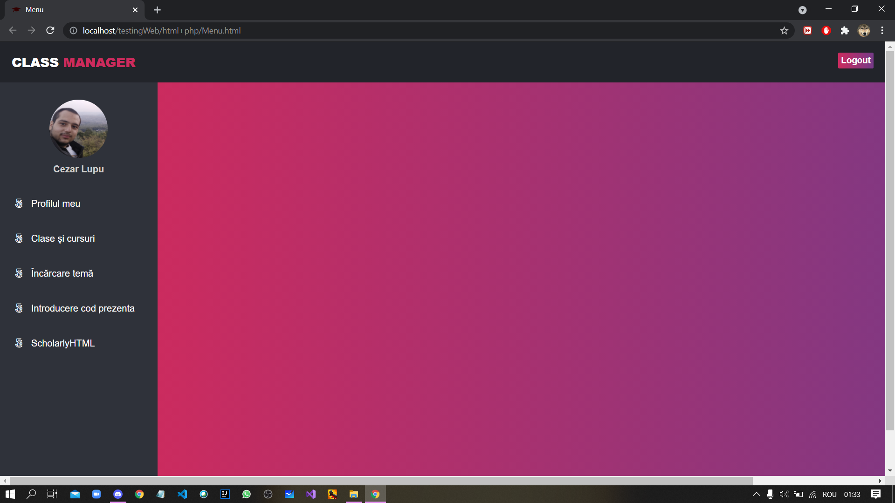Meniul pentru profesor este, de asemenea, implementat în HTML și CSS.
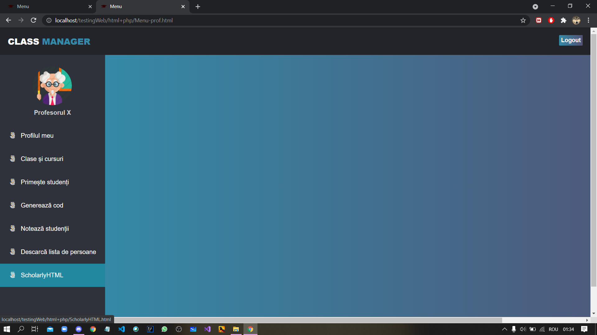4.5 Accesarea cursului/clasei
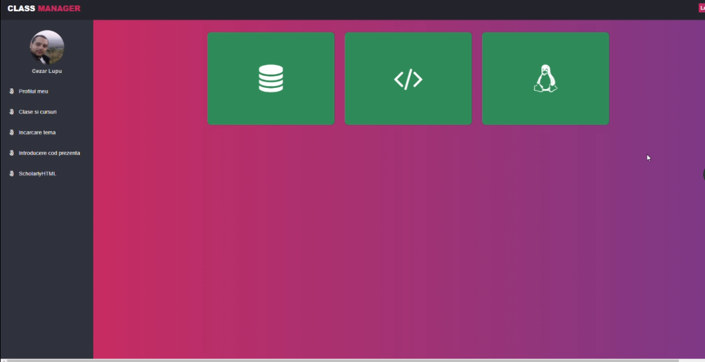Profesorul și elevul vor putea accesa componenta „Clase și cursuri” a meniului pentru a-și desfășura activitățile educaționale. Astfel, în interiorul paginii veți găsi, pentru început, trei exemple de cursuri. Pagina este responsive, lucru pe care îl puteți vedea minimalizând cât mai mult fereastra browserului.
Această componentă a fost implementată în HTML și CSS. Aceeași componentă, dar cu meniul pentru profesor, o puteți vizualiza aici, bineînțeles, dacă vă veți loga mai întâi 😊.
4.6 Acceptarea studenților
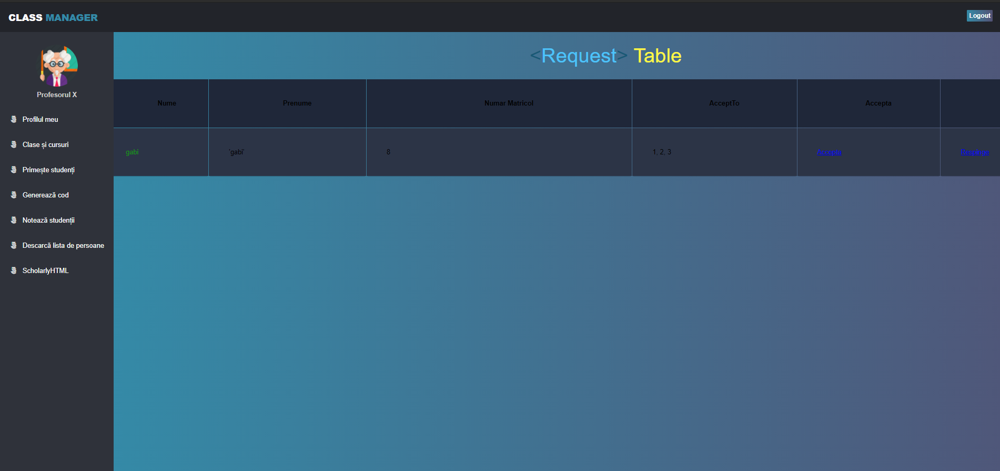Profesorul are o componenta numita "Acceptare studenti" in care poate vedea studentii care vor sa faca parte din calsa lui.Acestia introduc un cod dupa care vor aparea intr-un tabel.
In acest tabel vor aparea studenti cu nume,prenume, grupa, numar_matricol si la ce materie vor sa faca parte. Profesorul apasand pe numele studentului il poate accepta sau respinge.
4.7 Generarea de cod pentru student
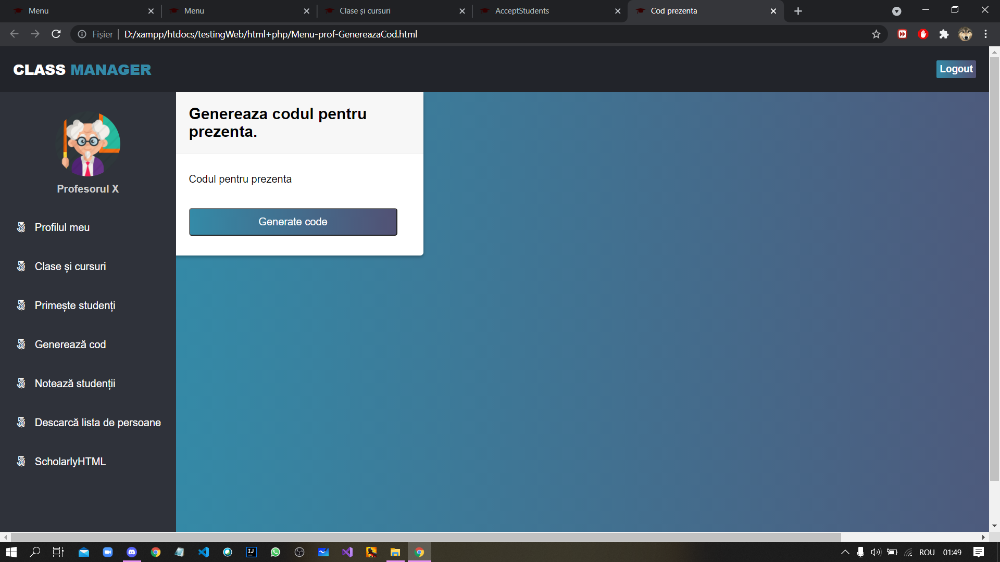Profesorul are posibilitatea de a genera un cod ce va fi utilizat pentru a face prezența. După ce codul va fi generat, profesorul le va transmite codul studenților. In tabela cursuri vom lega acest cod de cursul pentru care este generat.
4.8 Notarea studenților
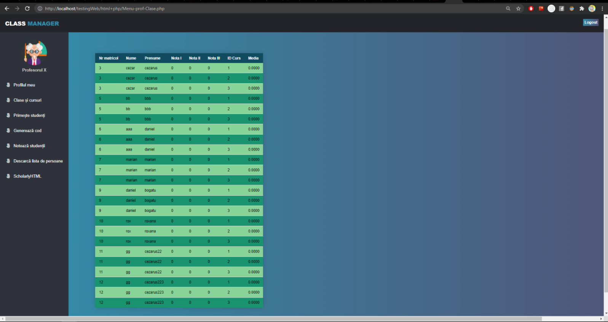Profesorul va avea un tabel(catalog) unde vor aparea toti studenti de la o anumita materie predata de el. In formatul id, nume,prenume, grupa, cele trei note si media.
In acest tabel sunt studentii(nume, prenume..etc) dar si trei coloane in plus care reprezinta notele. Media se va calcula automat, fiind media aritmetica a celor 3 note.
4.9 Descărcarea listei de persoane
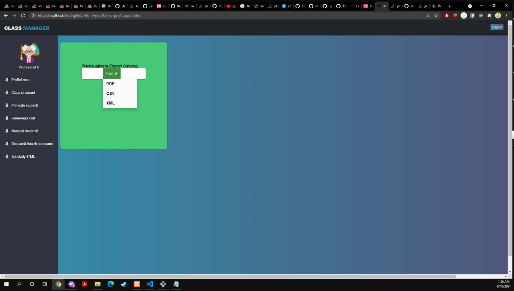Componenta "Descarcarea listei de persoane" va avea ca functionalitate exportarea de catre profesor al unui fisier de extensie aleasa de catre profesor. Astfel, vom avea urmatoarele cazuri:
PDF -> implementat cu ajutorul pachetului TCPDF;
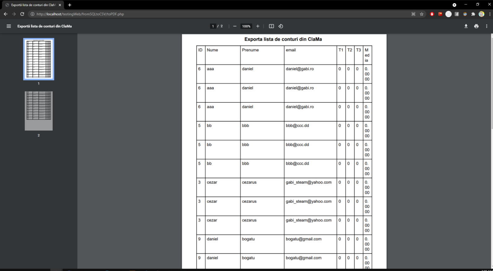CSV -> care se va accesa print-ul HTML intermediar
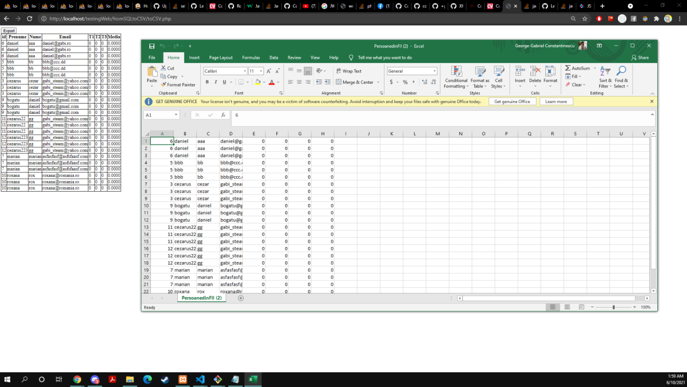XML -> la care avem atat functia de export, cat si cea de import.
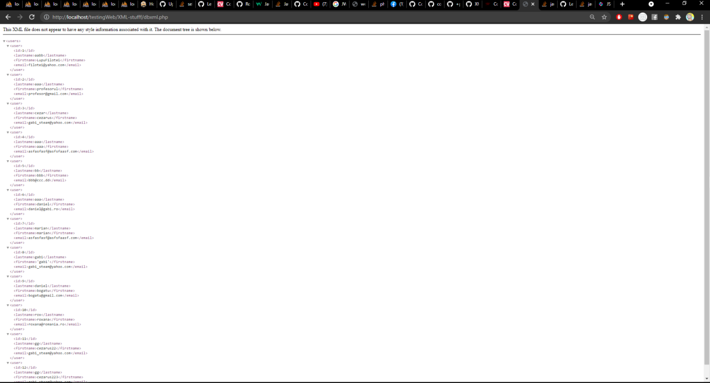4.10 Încărcarea temei
Încărcarea temei este o parte ce va fi utilizată în complementaritate cu clasa/cursul pe care îl vom accesa. Pentru această parte, am gândit atât utilizarea unei funcții de tip ”drag and drop” pentru fișierul care se dorește a fi încărcat, cât și posibilitatea de a naviga prin computer. Este o funcționalitate specifică studentului. Exista doua parti:
Partea de upload: se incarca fisierul, se salveaza in baza de date si se genereaza un link.
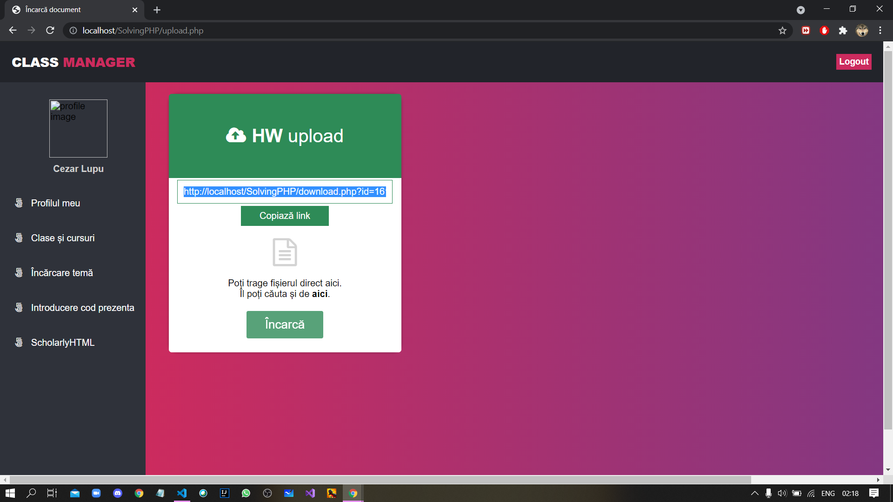Partea de download: se acceseaza prin link-ul primit si permite descarcarea temei.

4.11 Introducerea codului de prezență
Studentul are posibilitatea de a introduce codul generat de către profesor si, astfel, de a aparea in baza de date asignat cursului la care doreste sa participe.
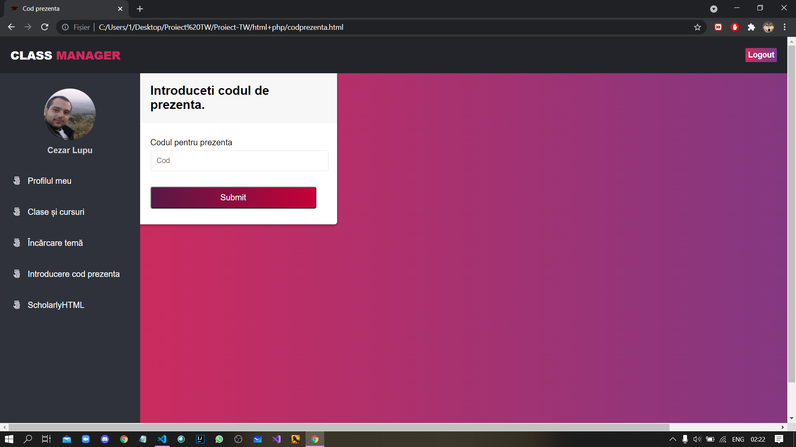